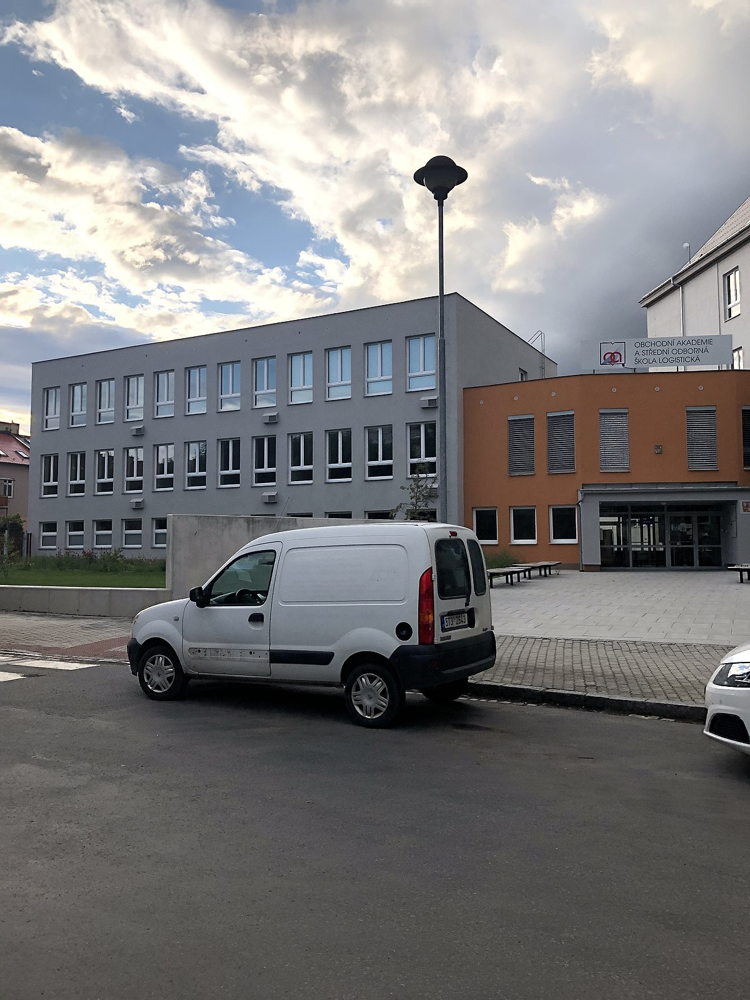

OA A SOŠL OPAVA
Střední škola zaměřena na ekonomické vzdělání

Budova Obchodní akademie a Střední odborné školy logistické v Opavě
Zde je něco o historii školy:
- 1851 - zřízena Německá gremiální obchodní škola
- 1894 - přejmenována na Slezskou obchodní školu
- 1912 - začalo se vyučovat česky
- 1920 - vznik České obchodní školy
- Po roce 1945 - další názvy školy: hospodářská družstevní, střední ekonomická
- 1979 - dokončena přístavba školy se šesti učebnami
- 1981 - uvedena do provozu tělocvična
- 1989 - postupná modernizace technického vybavení školy
- 1990 - Obchodní akademie a Obchodní škola
- 1996 - Obchodní akademie
- 2000 - Obchodní akademie a Obchodní akademie pro zrakově postiženou mládež
- 2003 - MEIS (Místní evropské informační středisko)
- 2012 - sloučení se školou Střední škola poštovních a logistických služeb, Opava, příspěvková organizace
- 2012 - Obchodní akademie a Střední odborná škola logistická, Opava, příspěvková organizace
- 2020 - výročí 100 let